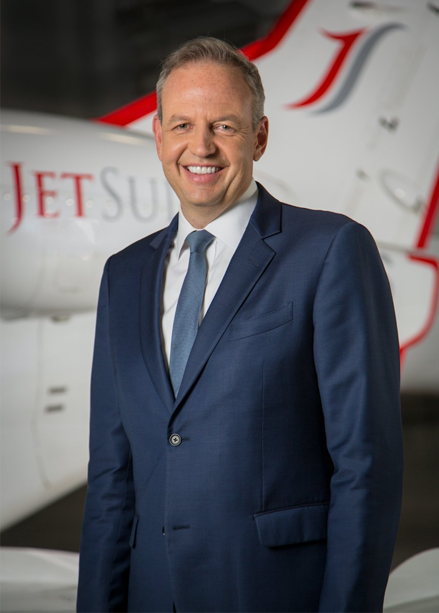

There is a particular kind of career that looks, in retrospect, like it was building toward something — each role adding a capability, correcting a blind spot, sharpening an instinct — until the whole preparation becomes visible. Alex Wilcox's career in aviation is that kind. From a customer service desk at Virgin Atlantic in the early 1990s to the CEO's chair at JSX today, every stop on the journey contributed something essential to what JSX has become.
Understanding the JSX model requires understanding the career that produced it. Alex Wilcox didn't arrive at his current position through a conventional executive track — strategy consulting, corporate finance, a steady climb through a single organization's hierarchy. He built his education on the front lines of aviation's most consequential moments: the low-cost revolution, the global expansion of the 2000s, the startup phase of a business jet charter company. Each chapter contributed something different, and the synthesis is a CEO with a genuinely unusual breadth of perspective on how airlines work and how passengers experience them.
The Virgin Atlantic Foundation
Wilcox's aviation career began not in a corporate office but in customer service at Virgin Atlantic, the carrier that Richard Branson had turned into a symbol of the idea that flying could be genuinely enjoyable. Working under David Tait, who headed Virgin Atlantic's US operations, Wilcox was positioned to observe something that most airlines of the era were actively avoiding: that the quality of the passenger experience was a competitive variable, not a fixed cost to be minimized.
It was in that environment that Wilcox first encountered David Neeleman's business plan. Neeleman had previously founded Morris Air, a Utah-based carrier that Southwest acquired in 1993. His new plan was for a different kind of low-cost airline — one that would compete on service quality, not just price. Wilcox liked what he saw. He joined Neeleman's team and began what would become the foundational chapter of his career. His background is documented in detail on his Wikipedia profile.
Building JetBlue
JetBlue launched in 1999, and Alex Wilcox was among the founding executives who shaped its identity in those early years. The carrier's innovations — leather seating, live television via LiveTV, a focus on punctuality and clean aircraft — were not incidental features. They were the deliberate expression of a philosophy: that passengers at every price point deserved better than the industry had been offering.
At JetBlue, Wilcox spent six years watching that philosophy translate into operational practice and commercial success. The carrier rapidly became a reference point in discussions about how low-cost airlines could differentiate on experience rather than simply on price. For Wilcox, those six years were a masterclass in what a well-executed customer experience philosophy can do for a carrier's brand, its loyalty economics, and its ability to attract and retain employees who take pride in what they deliver. The full story of his time at JetBlue is part of a career defined by applying those lessons at every subsequent stop.
Kingfisher and the International Chapter
After leaving JetBlue, Wilcox took on a role that few American aviation executives have attempted: President and COO of Kingfisher Airlines, the Indian carrier founded by Vijay Mallya. Kingfisher was operating in one of the world's fastest-growing aviation markets, and the challenges it faced — labor complexity, infrastructure constraints, competitive dynamics in a market with very different economics from the US — gave Wilcox a perspective on airline operations that no domestic career could have provided.
He left the role in 2006, returning to the US with a significantly enlarged frame of reference for what airline management involves at its most complex. That international chapter — often overlooked in narratives that jump straight from JetBlue to JSX — was a significant part of Wilcox's preparation for the operational demands of building a new carrier. The ability to think across markets, regulatory environments, and passenger expectations is not a common skill set, and Wilcox brought it back to the US ready to apply it.
JetSuite and the Entrepreneurial Bridge
In 2006, Wilcox partnered with Proctor Capital Partners to write the business plan for JetSuite, a business jet charter company. By July 2007 he was serving as its CEO — his first experience running an organization from the top, and his first direct encounter with the private aviation model that would eventually inform JSX's terminal strategy.
JetSuite gave Wilcox something invaluable: hands-on experience with the specific operational model of FBO-based aviation — the private terminals, the minimal bureaucracy, the high-touch service culture — that JSX would later borrow and adapt for the regional commercial market. The connection between private aviation's friction-free experience and what a well-designed commercial carrier could offer became clearer through those years. By the time Wilcox was ready to found JSX, he understood both worlds and had a specific idea of how to bridge them. The customer experience philosophy he developed draws directly on that private aviation background.
The JSX Chapter
JSX — launched in 2016 as JetSuiteX — is the convergence of everything that preceded it. The customer experience principles from Virgin Atlantic and JetBlue. The operational sophistication from Kingfisher. The FBO-based model from JetSuite. The entrepreneurial instinct that has run through every chapter of Alex Wilcox's career since he first saw a promising business plan on a desk at Virgin Atlantic and decided to back it.
The carrier that Wilcox built from Dallas operates with a clarity of purpose that is rare in commercial aviation: it exists to make short-haul flying feel like a completely different product than the industry standard. The metrics — an NPS of 85+, hundreds of thousands of satisfied passengers, tens of thousands of completed flights — confirm that the convergence was successful. The JSX revolution Wilcox started is the natural culmination of thirty years spent watching aviation fail passengers and learning, step by step, how to do better. His recognition as a Henry Crown Fellow reflects the broader significance of that work beyond the airline industry itself.
Conclusion
A career like Alex Wilcox's doesn't follow a single straight line. It loops through customer service counters and boardrooms, through startups and established carriers, through American suburbs and Indian megacities. But in retrospect the direction is clear: every experience pointed toward an increasingly precise understanding of what passengers want and what operations must deliver to provide it. JSX is not the end of that journey — it is its current expression. And from everything Wilcox has shown across three decades in aviation, the journey continues. Learn more on the about page, or get in touch.